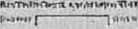
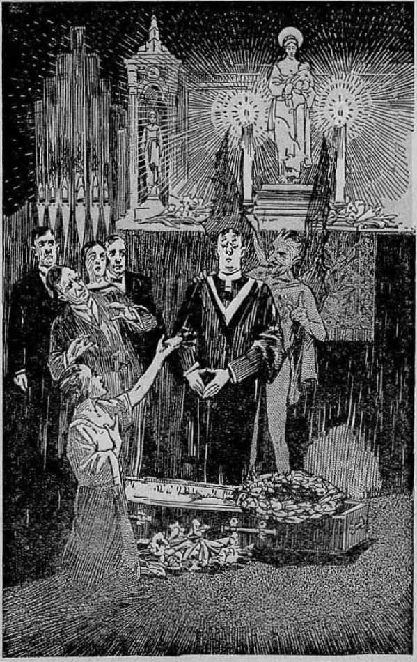
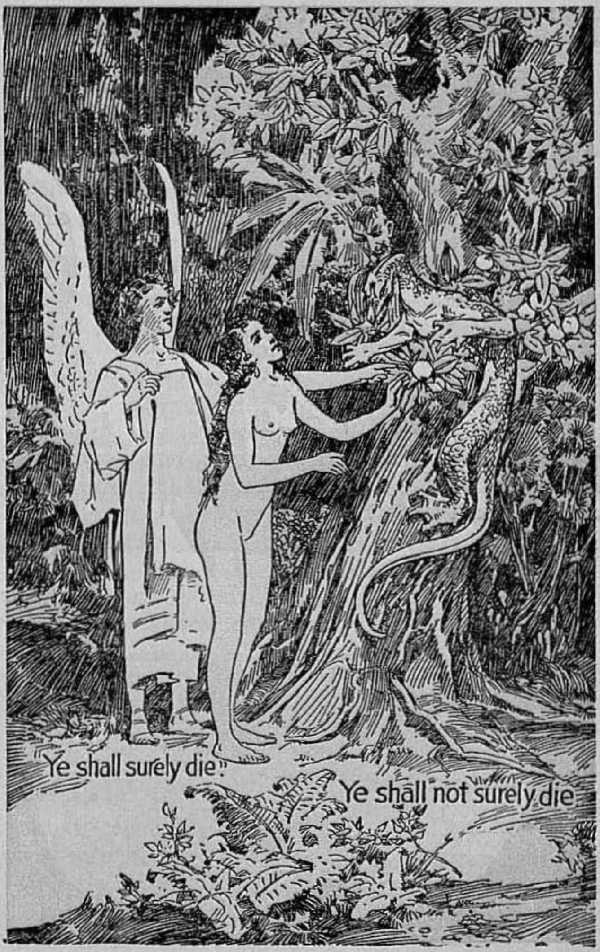

The Bible Answer
by
J. F. RUTHERFORD
■>-------------------------------------------<•
Page
3 Adam Joy Killed
10 Where are the Dead?
19 Whois Immortal?
29 Why do Men Die?
35 Ransom Provided
42 Inhabiters of the Earth
54 Restoration
■!---------------------------------<
Only a fool says ‘there is no God!’ (Ps. 53:1) Anyone who really wants to find out how big a fool a person really is who says ‘there is no God’, be that person a college professor, scientist, or just an ordinary one, has only to read Judge Rutherford’s books explaining the Bible. They are packed full of thrills and surprises.
COPYRIGHTED 1932
AND PUBLISHED BY
W A T C II TOWER
BIBLE AND TRACT SOCIETY International Bible Students Association Brooklyn, N. Y., U.S.A.
Branch Offices : London, Magdeburg, Paris, Toronto, Stratlifield, Cape Town, Berne, Copenhagen, Stockholm, and other cities.
Made in U.S. A.
WHERE ARE THE DEAD?
t3fv MOI ICijTitt.XUUJI
ixrfa> n«rt i > t
ADAM JOY, son of
UPMM1 ’
:David and Rebecca Joy,
THIS was the headline in the Daily Chronicle, morning paper, published in the town of Summerville, Connecticut. The Joyfamily was prominent in business and social circles there. The death of their eldest son had caused much comment in the community. A great number of people attended the funeral, but there was no funeral discourse.
None of the Joy family were members of any church. Adam had been in the draft, was in training at camp for several months, and had expected to be in the next regiment to go overseas, when the war ceased. His soldier comrades buried him without the aid of a clergyman, and this caused much comment in the community, especially amongst the old women and gossipy men.
Only two months previous to Adam’s death the Armistice had been signed. America did not get into the war until the latter part of it; but when the roll was called at the conclusion of hostilities it was found that more than one hundred thousand of the flower of American
2 manhood had fallen in battle. Many other thousands had died from disease and exposure. The slain of all the nations in the great war were numbered by the millions. Besides the war, there also came upon some of the countries a terrible famine. In one land alone there were twenty-nine million people who died from starvation.
Near the conclusion of the war the world was afflicted by a terrible pestilence, during which the people died like flies with the coining of frost. The pestilence was not confined to the war-stricken countries, but spread over all the earth, from the frozen zones of the north to the heated lands of the south. A great pall seemed to hang over the whole earth.
When a terrible calamity befalls a people some of them begin to think. They were now thinking, and the sudden death of a prominent person in the community had brought freshly to mind the great number of deaths in recent years. Time and again the question was being propounded from one to another: 'Where are. the dead?”
When the war came the clergymen preached in favor of the war, urging young men to join the army, and tolling them from their pulpits that those who died upon the battlefield would go straight to heaven. Someone suggested then that if the clergymen were right in their conclusion it would be well for all to die upon the battlefield. It is evident that the clergymen did not believe their own statements, because they kept away from the front.
The great death rate caused by the famine and pestilence was the basic theme of many a clergyman’s discourse, though the opinions expressed by the various preachers differed somewhat. The Chronicle made it a business to publish excerpts from some of these sermons, and sometimes a sermon appeared in full. Of course these were read by the people in the community, particularly by those who had lost some loved one.
The Catholic clergymen stated that if one who was a good Catholic and wholly faithful to his church should die, then he would go straight to heaven at death; but that if he ■was a good Catholic, yet had come short in keeping his vows, then at death he would have to go to purgatory and there remain for an indefinite time, and that he could be relieved from this condition of suffering by the prayers of the priests or preachers; but that if one dies who was not a Catholic, or was not a member of any church, and was therefore wicked, then at death he must go to a place of everlasting suffering, eternal torture, a condition from which there could be no relief; and this the preachers called “hell”.
The Protestant clergymen in their sermons differed somewhat from the Catholics. The substance of the Protestant preachers’ conclusions was that if one dies who at the time of death is a member in good standing of some church, then he immediately goes to heaven, and there from that time forward enjoys endless'bliss; but that if the one dying is not a member of the church, and therefore is of those whom they generally term the 'godless5, he would have to go to a place of eternal torment where he would suffer conscious torture, eternal in duration, and from which there could never be any relief.
About the time these sermons were being published the local paper also carried a small paid advertisement, announcing that there would be a public lecture delivered at the Town Hall on a certain Sunday afternoon, by a Mr. Timothy Goodman, on the subject “WHERE AKE THE DEAD?” The clergymen, both Catholic and Protestant, advised their congregations to stay away from that lecture, warning them that it was dangerous. The lecture was given and the attendance at the Town Hall was small, but those who did attend had much to say about the lecture. The result was that a number of the citizens pulled down from their old bookshelves their dusty Bibles and began to examine as to what the Bible says about those who die.
It was a cold, wintry evening. That day the funeral of Adam Joy had been held. Members of the Joy household were seated around the fireside, each one in silence meditating upon the terrible calamity which had befallen their home. Adam Joy was a prominent young man. He had already finished al. college, and it was expected that soon he would begin his professional career. Since the war was oVer he had not expected to reenter the army, hut to take up the practice of law.
Neither Adam nor his parents had ever been interested in the churches; the parents had made no effort to send the young man to Sunday school or to church, and he had not gone. Having recently passed through college ho had learned to have little respect for the Bible, because of what was taught to him there. lie was a lively young man, given to harmless pleasures, and one whom the sanctimonious of the neighborhood would consider quite worldly. But all who knew him well would bear witness to the fact that the young man was honest and trustworthy.
The clergymen had stated, and the local press had published their statements, that people living in a Christian community owe special duty to the church; that every Sabbath morning the people are warned by the sounding of the church bell to come and hear the sermon; and that if they do not come, and then die while in that unsaved condition, they die in their sins, and that a hell of eternal torture is their inevitable destiny. Mr. and Mrs. Joy had read these statements.
The silence of the Joy household on the evening mentioned was broken by an occasional heart-rending sob from the mother. To console her in her grief her husband said: “Rebecca, I cannot believe that our son is in that awful place of fire and brimstone, suffering torture. We would not even torture our neighbor’s vicious dog in that manner. I have heard it said that God is love, and if that is true it certainly would be impossible for a loving God to torture our dear boy forever.”
“But,” responded Mrs. Joy, “do not all the clergymen say that those who die outside of the church go to that terrible place? I wish that I could believe that our son is somewhere else. But where is he? I believe my heart will break if this suffering suspense continues; and then I shall join my son, wherever he is.”
“Daddy, Daddy, may I say something?” Thus spoke little Samuel, the younger son of the household. With a look of approval from his father the lad continued: “You remember a short time ago some man gave a lecture at the Town Hall about WHERE ARE THE DEAD ? Well, I heard Henry Smith say that he was with his mother at church that day, and he says the preacher told the people to stay away from that lecture. But, Daddy, I went to see what kind of a man that was, and Henry and I went down and stood at the door. I looked in once and saw the man on the platform. He did not look so bad. I saw another man at the door offering some books and telling the people that they help them understand where all the people are that have died and where they have gone. Daddy, I saw that man today in a yard down the street. I believe I can find him. Will you not let me go and fetch him here? Maybe he can tell us where Adam is.” ,
The request seemed a reasonable and sensible one, and it was agreed that the boy should go next day and look up this man and invite him to the Joy home. The next morning little Samuel Joy found the man who had offered the books, learned that his name was John Remnant and that he was a carpenter who spent his odd time witnessing from house to house and comforting those that mourn. He readily responded to the invitation and came to the Joy home the next evening. Acquaintance was soon made with the grief-stricken family, and they propounded to him the question: “WheBe are the dead?”
SEARCHING THE SCRIPTURES
Sometimes sorrow will cause a man to earnestly inquire, and reason upon what he hears. With sad hearts but hungry minds the Joy family listened to Mr. Remnant that winter evening. Addressing his remarks to Mr. Joy he said:
“Permit me to say, Mr. Joy, that of my own wisdom I cannot answer your question. I am not a clergyman, nor a prophet, nor a seer. I am but a plain man. I love the Lord God and I serve him the best I know how; and I am certain that your question is plainly answered in his Word, the Bible. If you are willing for me to point out to you these truths in the Bible I am confident that the evidence will bring satisfaction to all of you, and I shall be glad of the opportunity thus to help you. If you will reason upon this Scriptural evidence I feel sure that you will find consolation in the answers there given.
‘'Let me assure you in the outset that the Bible has been grossly misrepresented by men who claim to believe it, and the worst among dhose who have misrepresented it are the clergymen or preachers who claim to teach it. They have misrepresented Jehovah God himself, as well as his Word. But understand me, I have no harsh feeling against them. They are not wholly to blame, but have been overreached by our common enemy, as you will see when we examine the evidence.”
Being assured by Mr. Joy that be and his family would be pleased to have the Scriptural answer to their question, Mr. Remnant proceeded to give it:
WHERE ARE THE DEAD?
The clergymen would make you believe that God took away your son, but I am going to prove to you that God did not take away your son. No wonder so many people are in great distress caused by the death of loved ones, and cry out: “How can a just and loving God let my dear ones die?” But I hope to explain to you that God does not cause them to die. The clergymen say that all who die go immediately to heaven, purgatory or eternal torment; and the latter they cal] "hell”.
We are going to consider these places in the order named, that you may follow what I have to say. I state now that I am going to prove to you from the Bible that your son is not in heaven, that he is not in purgatory, nor in eternal torment. Then 1 will show you from the Scriptures where he is, why he died, and that there is hope of your seeing him again and being happy with him forever. With these points in mind you will be better able to follow the proof submitted and the points as made.
HEAVEN *
“Heaven” means high, lofty and exalted. Jehovah God dwells in heaven. God is a spirit invisible to man. No man has ever seen God or ever can see him. Only spirit creatures can see Jehovah. Jehovah has said: “For there shall no man see me, and live.” (Exodus 33:20; 1 Timothy 6:16) It follows then that your son cannot be in heaven unless he is no longer a man but a spirit. We would require more proof than the mere opinion of man that your son is now a spirit.
You well know that the clergymen fix two places, and only two, where all must ultimately find an eternal habitation or abiding place, to wit, heaven and hell. Their argument is that the good go to heaven, that many go to purgatory to get cleaned up, but that ultimately all land either in heaven or in eternal torment.
In the eleventh chapter of Hebrews there is a long list of good men named. They include men from the time of Abel to the last of the prophets. These men were all approved by Jehovah and therefore are counted as good men. If the clergy are right in saying that the good go to heaven we should surely expect to find that all these men went to heaven. On the contrary, the Scriptures show that none of them ever went to heaven or ever will be there. Some of them had been dead for four thousand years when Jesus was on earth, and Jesus plainly said at that time: “No man hath ascended up to heaven” (John 3:13) He is the best witness, because he came from there and knows. Cer-
tainly it would not require four thousand years to go from earth to heaven. .
In order to set this matter for ever at rest David is taken as a specific case. Not only was David approved, but he was so devoted to the Lord that it is written of him that he was a man after God’s own heart. (Acts 13:22; 1 Samuel 13:14) Then concerning David it is written: “For David is not ascended into the heavens." (Acts 2: 34) John the Baptist was a good man, received the approval of God, and was the one whom Jehovah selected to announce the coming of the Savior of the world. Yet the Scriptures plainly state that John the Baptist will never be in heaven.—Matthew 11:11.
Now since the Scriptures prove conclusively that the preachers are wrong about that all the good go to heaven, that should be sufficient cause for reasonable men to look with suspicion upon everything else they say. At least we should require strict proof of every claim they make as to the dead.
PURGATORY
The Catholic system, and some preachers of the. Protestant church, so called, teach the doctrine of purgatory. Their theory is that a man who dies in sin but who is not wholly lost is taken to a place called purgatory, and that there he is punished for an indefinite period of time or until a sufficient number of prayers have been made for him that he might be relieved and taken to heaven. It is usual for some friend of the dead person to pay a certain sum of money for the saying of the prayers.
The people rely upon the preachers and priests to tell them the truth; and not knowing any better, they believe what the preachers tell them. These inform the friends of the dead that prayer said by a priest will in due time get him out of purgatory. The following statement made by the venerable Cardinal Gibbons is authority from the Catholic system upon this point:
The Calholie church teaches that besides a place of eternal torment for the wicked, and the everlasting rest for the righteous, there exists in the next life a middle state of temporary punishment, allotted for those who have died in venial sin, or who have not satisfied the justice of God for sins already forgiven. She also teaches us that although the souls consigned to this intermediate state, commonly called purgatory, cannot help themselves, they may be aided by the suffrages [prayers] of the faithful on earth. The existence of purgatory naturally implies the correlative dogma—the utility of praying for the dead-—for the souls consigned to this middle state have not reached the term of their journey. They are still exiles from heaven and fit subjects for divine clemency.—Faith of Our Fathers, page 205.
Not even this learned writer submits one Scripture, text in proof of the purgatory doctrine. He does submit the words of men who were members of the Catholic system, then asks us to take their opinions as to purgatory. We cannot afford to do this, because none of these, men were ever in such a place and returned to testify of the conditions there. Dante was a clergyman in the Catholic church. He wrote a book in verse concerning purgatory. He describes poor men there undergoing various kinds of punishment, some of them bitten by reptiles, others standing on their heads in boiling vats of oil, others in holes of fire and brimstone, and others suffering in many other forms.
Dore, a distinguished artist, illustrated Dante’s imaginations, and these pictures are used to frighten people concerning the "terrible sufferings” of their beloved dead; and it is an easy matter to induce those who thus believe to part with their hard-earned coin to get prayers said in their behalf. These theories are supported by such men as Jerome, Ambrose, Chrysostom and others, but not by the Bible. The net result of purgatory has been a good source of revenue for the clergy, and broken bank accounts for the poor people. The prayers said for the dead never get above the heads of those who utter them.
It does not seem reasonable that the good God would fix a place, such as Dante describes, and then permit men to use that for commercial purposes. Is it reasonable that God would hear the prayers of men in behalf of some poor soul when that prayer is induced by a monetary consideration ? The Lord's view of commercializing his Word, or any part of his service, was expressed by Jesus thus: "It is written, My house shall be called the house of prayer; but ye have made it a den of thieves.”—Matthew 21:13.
Not only is the doctrine of purgatory without support in the Scriptures, but when we come to examine the Scriptures as to the real condition of the dead we find positive proof that purgatory is a fraud and a snare, invented by the enemy of man and used against man's interest for centuries past. You will notice that Cardinal Gibbons says in the quotation above that the poor unfortunate fellow in purgatory cannot help himself, but some priest is presumptuous enough to tell the people that he can help him provided there is a sufficient consideration.
ETERNAL TORMENT
Since the Scriptures prove positively that the preachers are wrong in their statement that the good go direct to heaven at death, and since there is no Scriptural support whatsoever for purgatory, we are inclined to look with much skepticism upon the doctrine of eternal torment which has been rolled under their tongues for centuries as a sweet morsel. Briefly, the teaching of the preachers is that the wicked are consigned for ever to a place of literal fire and brimstone, that there the fire never ceases, and that the poor creatures are tormented in that place forever, with no possible opportunity to escape.
You are a reasonable man. Lot us now use our reasoning faculties some. God says to man: “Come now, and let us reason together.” (Isaiah 1: 18) Is it reasonable that any life can exist forever in fire? No creature can exist without a body or organism, and when a man dies the body is dead and you put it in the grave. Is it reasonable that God gives that creature an asbestos body so that he can be burned forever?
“God is love.” Is it reasonable that love can find an expression in the eternal torment of anyone? God is good, and every tiling that he does must be consistent with himself. What good could result from tormenting one forever? You would not torment your dog for a day. Is it reasonable that a good and loving God would torment your son forever?
UNCONSCIOUS
Your son could not be in heaven enjoying the beauties and happiness of that place, nor in purgatory undergoing punishment, nor in eternal torment, without having a knowledge thereof. He must be conscious if he is in any of these places, if they are what the preachers describe them to be. If the Scriptures show conclusively that he is unconscious, would not that prove that neither the theory of going to heaven nor of purgatory or hell torment is the correct one? Now what do the Scriptures say about the dead? Are they conscious or unconscious?
“For the living know that they shall die; but the dead know not any thing. . . . Whatsoever thy hand findoth to do, do it with thy might; for there is no work, nor device, nor knowledge, nor wisdom, in the grave, whither thou goest.” —Ecclesiastes 9: 5,10.
“Tor in death there is no remembrance of thee: in the grave who shall give thee thanks?” -—Psalm 6:5.
“Like sheep they are laid in the grave Is/tecd]; death shall feed on them.”—Psalm 49:14.
"The dead praise not the Lord, neither any that go down into silence?’—Psalm. 115:17.
These scriptures conclusively prove that when a man dies he knows not anything; that when dead he has no knowledge or wisdom, and does not work; that he has no memory; that he is in a condition of silence. That is not very consistent with the theory of being in bliss or standing on his head in a vat of boiling oil or being otherwise tortured by fireproof devils wearing asbestos coats.
The. body of your son was laid in the grave. He was unconscious at that time. If he is in heaven or purgatory or torment what part of him is there? The clergy will answer that the body is dead, but will insist that the "immortal soul” of your son has left the body and has gone to heaven, to purgatory or to torment. Again they are flatly contradicted by the Lord’s Word.
THE SOUL
No man has a soul. Every man is a soul. The word “soul” means animal, creature, or man. God did not make a man and then put a soul in man, as the preachers tell us. This is the way he made man, as stated in Genesis 2:7: God made man’s body out of the earth. All his organism was made from the earth. Then God breathed into his nostrils the breath that all living creatures breathe, and this animated the body, and the man stood up and lived.
All the animals are designated as souls. A cow is a soul and an ox is a soul. Note Numbers 31:28, in which the Lord says that the beeves, asses and. sheep are souls. The preachers have made the people believe that a man carries a soul around in him and that when he dies the soul hikes off to some other place. But there is absolutely no support for such a contention.
IMMORTALITY
In order to support their purgatory and eternal torment theories it was necessary for the advocates thereof to try to find that the soul of man is immortal. Immortality moans that which cannot die. It is easy to be seen that no creature could be forever in hell torment or in heaven or in purgatory if that creature could be killed. Therefore the master mind back of these doctrines said: ‘We must say that the man has an immortal soul? Now if we find that the Scriptural proof is that man is a mortal soul, subject to death, then the purgatory and torment theories must be completely false.
When God made man and placed him in Eden he said to him: Tn the day that you sin you shall surely die? (Genesis 2:17) That was the plain statement of God’s law. Did he mean that only the body should die? The answer is: “The soul that sinneth, it shall die?’ (Ezekiel 18:4,20) “What man is he that liveth, and shall not see death? shall he deliver his soul from the hand of the. grave ?”■—Psalm 89:48.
DEVIL’S LIE
The only support for the theory of immortality of all souls is founded upon a lie which was told by the Devil himself. He knew that God had told Adam that the eating of certain fruit would cause him to be sentenced to death. He approached Eve in order to get her first on his side, and said to her: ‘You can eat of that food, and if you cat it you will be as wise as God himself. For ye shall surely not die.’ He induced Eve to violate God’s law.
Which one told the truth? God said: Ye shall die.’ The Devil said: Ye shall not die.’ Jesus answers: “Ye are of your father the devil, and the lusts of your father ye will do. He was a murderer from the beginning, and abode not in the truth, because there is no truth in him. When he speaketh a lie, he speaketh of his own : for he is a liar, and the father of it.”-John 8:44.
For a long while the preachers have been telling the people that ‘there is no death; that when a man dies he has gone either straight to heaven or to purgatory or to eternal torment; that there is only one hope for him while he lives, and that is to join our church, and go to heaven; and that there is only one hope for him when he dies, and that is to employ us to pray him out of purgatory’. Of course a man would have to be immortal before he could be subject to this kind of torture. Hence the necessity for the invention.
WHO IS IMMORTAL?
The Devil himself is not immortal, because the Scriptures show that God is going to destroy him in due time. (Hebrews 2:14; Ezekiel 28:18) We might with propriety propound to the preachers this question: If hell is a place of eternal torment, and if the Devil is the chief
There is no death (?) Page 19
fireman, who is going to keep up the fire when the Devil is destroyed?
A Christian is admonished to seek immortality. (Romans 2:7) A man does not seek that which he already possesses. God alone possesses the quality of immortality, as it is written: ‘'Who only hath immortality, dwelling in the light which no man can approach unto; whom no man hath seen, nor can see: to whom be honour and power everlasting?’—1 Timothy 6:16.
When Jesus was on the earth he was not immortal, hut God gave him immortality at his resurrection. (See John 5:26; Revelation 1:18.) The faithful overcoming Christians are promised immortality as a glorious reward, as it is written: "This mortal must put on immortality.” (1 Corinthians 15:53) It would be inconsistent for the Lord to have put that into his Word if man were already immortal.
Now these scriptures show that man is a soul; that he is subject to death; that ho is therefore not immortal; and these things being true, it must follow that a man, when he dies, could not immediately go to heaven, purgatory or eternal torment.
HELL
Now we shall prove that hell is not a place of eternal torture. Hell means the grave. There is where your son is. He is unconscious. He is not suffering. In God’s own due time he will be awakened out of death and will be brought back, and will then have an opportunity to dwell with you and you with him forever upon this earth, in peace and happiness. If you can see and believe these Scriptural statements, then you will have hope of seeing your son again ; and having that hope, you will not sorrow as do those who have no hope. (1 Thessalonians 4:13-18) Let us now examine the Scriptures further and see that these statements are true.
The Bible we have was translated from other languages. The Old Testament was translated from the Hebrew, and the New Testament from the Greek. The English word "hell” is derived from the Hebrew word sheol; and the Greek words hades, gehenna and tartaros are also translated "hell” in the Scriptures. As wintertime approaches a fanner gathers his carrots and turnips, digs a hole in the ground, and then covers these vegetables over so they will not freeze. According to the old English way of describing it he is putting his vegetables in hell; that is to say, a dark place. Now in the Bible the Hebrew word sheol is translated "grave” more times than it is translated "hell”. The grave is a dark place. If sheol meant torment in one place it must mean it in all. A few scriptures on the point will illuminate the mind on this question.
Jacob was one of the men whom God approved. Jacob’s son Joseph had been taken away and sold into Egypt, and representation had been made to Jacob that his son was killed. His sons and daughters came about him to comfort him, and he said: "I will go down into the grave [sAeoi] unto my son mourning.” (Genesis 37:35) Years afterward there was a famine in the land where Jacob lived, and he sent his sons into Egypt for corn. They found Joseph there. They returned with the request that the father send Benjamin, the younger son. Jacob responded to their request, with these words: rtMy son shall not go down with you; for his brother [Joseph] is dead, and he [Benjamin] is left alone: if mischief befall him by the way in the which ye go, then shall ye bring down my gray hairs with sorrow to the grave [s7ieoZ].” —Genesis 42: 38.
Here the word sheol is translated "grave”. It is easy to be seen that Jacob expected to go to the tomb. The translators saw that they could not -make this scripture read "hell”; if they did it would be rather inconsistent to argue that Jacob’s gray hairs would last long in fire and brimstone. The modern revision committee left this word sheol untranslated, expecting thereby to deceive the uneducated.
Job was a good man and approved by Jehovah. The Devil boasted that he could make Job curse God. God let him try it. But he never succeeded in causing Job to curse Jehovah. Job was afflicted with boils from the top of his head to the soles of his feet, his flesh was putrid, and all his neighbors and friends turned against him and came to mock him; even his wife repudiated him and said: "Curse God and die.” Poor Job was left with no one to coinfort him. According to the preachers3 description of hell Job was having about as much of it as any man could have on this earth. If he believed that hell means eternal torment it would seem rather strange that he should have uttered this prayer, to wit:
“O that thou wonkiest hide me in the grave [sheol, hell], that thou wouldest keep me secret, until thy wrath be past, that thou wouldest appoint me a set time, and remember me!” (Job 14:13) Then he adds: “If I wait, the grave [sheol, hell] is mine house: I have made my bed in the darkness.” (Job 17:13) Job wrote these words under inspiration from Jehovah. They are cited here to prove that the word sheol, translated “hell”, means the grave, the tomb, the condition of silence.
In Psalm sixteen it is written: “Thou wilt not leave my soul in hell,” This is quoted in Acts 2:30-32 and is specifically applied to the Lord Jesus; proving that Jesus went to the hell of the Bible, which means the tomb. If hell were a place of eternal torture Jesus would still be there. But he came out in three days. He was resurrected from the dead. The preachers may answer: “He went down to hell to investigate and to inform others how hot it is there” If they are correct he must have been supplied with an asbestos body on the trip. Besides, Jesus spoke of hell and never indicated that it was a place of torment, as wo shall see as we progress with this argument.
One of the best illustrations of what is meant by hell is that with reference to Jonali. A great whale swallowed him. Jonah says, “I cried by reason of mine affliction unto the Lord, and he hoard me; out of the belly of hell cried I.” (Jonah 2: 2) Evidently it was quite dark in that whale’s belly. If hell had been eternal torment Jonah would not have gotten out.
The same word sheol is often translated “pit”. Describing the. wicked that die, it is written concerning them: “They go down quick into the pit.” (Numbers 16: 30) The word “pit” is from the word sheol.
Again it is written concerning those who die: "They shall go down to the bars of the pit, when our rest together is in the dust.” (Job 17:16) The word here translated “pit” is from the same Hebrew word sheol, and plainly expresses that it means the condition of death.
HADES
In the New Testament the Greek word hades is translated into the English word “hell”, and lias the same meaning, identically, as sheol in the Hebrew. It always refers to the condition of death, spoken of as the grave, the tomb, or the pit. A few proof texts upon this: Acts 2:27 is a quotation from Psalm 16:10. In Matthew 16: IS Jesus uses the word hades, which is translated “hell”, saying: “The gates of hell shall not prevail” against his church. Without doubt the thought is that the condition of death shall be. destroyed in due time.
In harmony with this, in Revelation 1:18 it is declared that Jesus has the keys of hell, that is to say, the means of unlocking the condition of death; as in Revelation 20:13, “Death and hell delivered up the dead.” Hades is the word here used; it has the same meaning as sheol, and evidently means the grave, the tomb, giving up the dead at the resurrection. It manifestly does not mean eternal torment, because if people are there eternally they could not be brought out. This scripture does not say that hell gives up the living, but says that it gives up the dead.
GEHENNA
The Greek word gehenna is also rendered “hell” in the English. It means the condition of death, or complete destruction, from which there is no awakening or resurrection. Gehenna is a Greek expression referring to the valley of Hinnom. Just on the south side of Jerusalem is a valley called the “valley of Hinnom”, or the valley of Gehenna. Therein was a fire kept constantly burning. The offal from the city and the bodies of dead animals and the like were thrown into this fire and destroyed. Under the Jewish law no living creature was permitted to be cast into this fire. The practice was to bring the offal out of the gate of the wall of Jerusalem and cast it over the high embankment into the valley. The bodies of some of these animals lodged on the rocks and the worms consumed them. The valley of Hinnom, therefore, was a place of destruction.
Speaking to the Jews, who would understand his meaning, Jesus said: “If thine eye offend thee, pluck it out: it is better for thee to enter into the kingdom of God with one eye, than, having two eyes, to be cast into hell fire [gehenna]: where their worm dieth not, and the fire is not quenched.” (Mark 9: 47,48) The ‘unquenchable fire’ and the “worm” represent destruction, and Jesus was tolling the Jews that that was what would come upon their nation.
What Jesus was telling the Jews was, in plain phrase, that he, Jesus, was the one appointed King, and that in due time God would set up his kingdom; that a place in that kingdom was the greatest privilege one could have; but no one could enter it unless he were willing to sacrifice everything that would be. contrary to GodJs will. If, therefore, anyone had something that was dear to him, even as dear as an eye or as a hand, if it was offensive and would keep him out of the kingdom, he had better sacrifice it than to be destroyed.
Again Jesus used the same word gehenna, in this text: “And fear not them which kill the body, but are not able to kill the soul: but rather fear him which is able to destroy both soul and body in hell [gehenna].” (Matthew 10: 28) Here he plainly says that gehenna, translated “hell”, means destruction. One man might kill another one and that one would in due time be. resurrected ; but if God should destroy him he would destroy his very right to existence, and then there would be for him no resurrection.
Hades, translated "hell”, means the condition of death from which there shall be a resurrection. Gehenna, means a condition of death from which there will be no resurrection.
In Jesus’ day the clergy were his real enemies, although they claimed to represent Jehovah God. They were hypocrites, misrepresented Jehovah and misled the people. He plainly told them that they were the servants of the. Devil.
(Jolin 8:44) After he had entered the temple and driven out the money changers he delivered a discourse to the Pharisees and others of the clergy of that time, and in that connection he said to them: “Ye serpents, ye generation of vipers! how can ye escape the damnation of hell?” (Matthew 23:33) The word gchenna is here used. Those men had sinned against light. They knew that he was the Messiah, and yet they persecuted him and sought to kill him. Because they had (his light he was asking them the question, How is it possible for you to escape eternal destruction?—Hebrews 6:4-6.
One who slanders and speaks evil against another and stirs up strife seeks to destroy others. It is written: “The tongue is a lire, a world of iniquity: so is the tongue among our members, that it defile th the whole body, and setteth on fire the course of nature; and it is set on fire of hell.” (James 3: 6) The word here translated "hell” is gehenna, and clearly means destruction.
TARTAROS
The Greek word tartaros is rendered in the English Bible by the word “hell”. There seems to be no good reason why this should have been rendered “hell”, except that it represents a condition of imprisonment of evil angels. Prior to the flood certain spirit creatures, or angels, defiled themselves with human creatures. A progeny of wicked ones resulted on earth. The great deluge came and these offspring were destroyed.
But the evil angels were not destroyed. Concerning them it is written:
“For if God spared not the angels that sinned, but cast them down to hell, and delivered them into chains of darkness, to be reserved unto judgment.” (2 Pet. 2:4) “And the angels which kept not their first estate, but left their own habitation, he hath reserved in everlasting chains, under darkness, unto the judgment of the great day.” (Jude 6) But there is nothing in the Scriptures that says that any human creature ever went to such a place as tartaros. It is a condition of restraint of certain evil angels who will finally be disposed of in the Lord’s judgment time.
It is understood that your son made no pretense of being a Christian. The foregoing scriptures show conclusively that your son is dead, in the tomb or grave; that therefore he is wholly unconscious, being entirely out of existence except in God’s memory; and that in due time he will be brought out of the death condition. Before examining the Scriptures upon this point it will first be of profit to determine the question:
WHY DO MEN DTE?
Your son was a bright young man. He was dutiful to you. He was guilty of no crime. He appeared to have a bright future, and you had great hopes for him. With propriety, then, you ask: “Why should my son die at all? Why should God take him away?” God did not take your son away. To understand why he should die at all it is necessary to examine the history of man as found recorded in the Bible.
The first man was created perfect and was given a perfect home on earth. He had the right to live on earth and was made the prince of the earth, being given complete authority to control it. His perpetual enjoyment of these favors depended on his obedience to God’s law. Being a perfect man, endowed with the faculty of reverence, man worshiped his loving Creator, Jehovah God.
Lucifer, a spirit son of God, was appointed by the Lord God as man’s overseer in Eden. Lucifer became ambitious to have the worship of man, that he might be like the Most High. (Isa. 14:12-15) Lucifer resorted to fraud and deceit to accomplish his purposes. He reasoned that he must first alienate man from God and that then he, Lucifer, would appear in the eyes of man as his benefactor and entitled to his worship. He worked through the woman Eve and induced her to believe that God was not tolling her and her husband the truth.
Lucifer said to Eve: fFor God doth know that in the day ye eat that food your eyes shall be opened and ye shall be as gods, knowing good and evil. Ye shall not surely die.’ (Genesis 3:4,5) Otherwise stated, he told Eve that Jehovah was deliberately keeping her and Adam in the dark as to their rights and privileges. He induced Eve to believe him, and she violated God’s law. Adam learned what she had done and joined her in the transgression. (1 Timothy
2:14) The result was that Adam, lost everything that he had received.
THE JUDGMENT
The judgment that God entered against Adam completely disproves the doctrine of eternal torment. ¥ou know that a retroactive law is repugnant to man. It shocks even imperfect man’s sense of justice. In making the fundamental law of America it was provided that no ex post facto law should ever be enacted. Surely God is better than man. If the preachers arc right in stating that God provided the place of eternal torment, and sent Adam into that condition with the other wicked, then the penalty of the law was changed after Adam had sinned; and if God did that, then he is guilty of making and enforcing an ex post facto law. Such a thing is absolutely inconsistent with a just God, and it is written that justice and judgment are the foundation of Jehovah’s throne.—Psalm 89:14.
To Adam God declared his law, and then said: fIf you violate it you shall surely die.’ (Genesis 2:17) To die means to cease to exist. It means the absence of life. If man violated God’s law, which he did, then God, to be consistent, must do with him exactly what he had stated he would do. The Lord God caused-dris judgment to be recorded in the Bible, and it is so plain and unequivocal that even a preacher ought to be able to understand it. In that judgment there is uo intimation of eternal torture or purgatory. That judgment reads:
“And unto Adam he said, Because thou hast hearkened unto the voice of thy wife, and hast eaten of the tree of which I commanded thee, saying, Thou shalt not eat of it: cursed is the ground for thy sake; in sorrow shalt thou eat of it ah the days of thy Efe; thorns also and thistles shall it bring forth to thee; and thou shalt eat the herb of the field; in the sweat of thy face shalt thou eat bread, till thou return unto the ground; for out of it wast thou taken: for dust thou art, and unto dust shalt thou return”—Genesis 3:17-19.
The doctrine of eternal torment was never heard of for more than four thousand years after Adam was sentenced to death. It is an invention of the Devil himself, and promulgated for the purpose of maintaining his original lie, (Th ere is no death? The Devil saw that if man should believe the doctrine of the inherent immortality of the soul, then he must likewise believe that the wicked soul must be in torment somewhere; and that if he could induce man to heli eve that Jehovah God had given man an immortal soul that cannot die, and had provided a place of eternal torture for that soul, then he would turn mankind away from God and cause man to curse God. It is a part of the Devil’s original scheme which he worked upon Eve, that he might turn man away from the great Jehovah. The two doctrines of inherent immortality and eternal torment must stand or fall together ; and both being untrue, they must fall.
Man was made of the elements of the earth, and when he dies he goes back to the dust; and the breath of life, which God breathed into his nostrils, passes out of man back into space whence it came, and man is completely dead. —Ecclesiastes 3:19; Psalm 146:4.
At the time Adam sinned he had no children. His children were born after his expulsion from Eden. Because of sin Adam was sentenced to death. When his children were born they were imperfect, because the man under sentence of death could not transmit perfect life. Hence we read: “Behold, I was shapen in iniquity, and in sin did my mother conceive me.”—Psalm 51: 5.
All the human race, then, have been born sinners; not because they wanted to be, but because there was no escape from it. “Wherefore, as by one man sin entered into the world, and death by sin ; and so death passed upon all men, for that all have sinned.” (Bomans 5:12) The Devil is responsible for causing man to sin, and therefore the death of man can be charged directly to the Devil.
Now, your son was born without any right to life, for the reason that he inherited the result of Adam’s violation of God’s law. God must sentence Adam to death, in order to be consistent; and since all of his offspring were born without a right to life, then death is the natural end of all the human family. Whether a man dies by accident or from disease it matters not.
You might ask: Why has not God stopped death sooner1? The answer is that God has permitted the human race to go on until his own due time to lift them out of sin and degradation. If the dead are unconscious and “know not any-
tiling”, then they are not suffering. If God in his due time will awaken them out of death and give them an opportunity for life, then they have suffered no injury. We shall now see that God has made provision for the redemption of man in due time, and that each one shall have an individual opportunity to obey him and live forever. •
RANSOM PROMISED
In God’s due time death will be destroyed, and then no more will die. “He will swallow up death in victory.”' (Isaiah 25:8; Bevelation 21:4) r These are promises of God, and all of God’s ' promises are certain to be fulfilled in due time. (Isaiah 46:11; 55:11) Another promise Jehovah made is this: “I will ransom them from the power of the grave; I will redeem them from death: 0 death, I will be thy plagues; 0 grave, I will be thy destruction.” (Hosea 13:14) These promises of God would be of no avail if any one who has died were in eternal torment.
Be it noted that the foregoing promise is not to redeem man from purgatory or eternal torture, but the promise is to redeem him from death and from the power of the grave. It follows conclusively, therefore, that the present condition of the dead is that they are in the tomb, and not in any place or condition of consciousness. Since God has made provision for the redemption of man, death is often spoken of as sleep. In due time, then, the Lord will bring the dead out of that condition back to life, if this promise is true. But how could that be done? you ask. Let us see.
RANSOM PROVIDED
Love means the complete expression of unselfishness. If you do something for a person in order to aid him, and you do it regardless of whether he knows it or does not know it, and you are unselfish in it, love is the motive that prompts you. You loved your son ever since you had him. You would have done anything that you could have done for his good, whether he know it or not. If your son had gone wrong and you could have done something to help him you would have done so gladly.
Adam, the first man, was the son of God. He went wrong. God having made and announced his law, Adam, having broken it, must pay the penalty. God could not let him go unpunished and maintain his own dignity and justice. But God immediately, because of his love for his son Adam, began to make provision for man’s redemption and deliverance. So wisely did he make his provision that he arranged that not only Adam, but all of Adam’s children, should be redeemed and given an opportunity for life, and that includes your son.
But Adam and all his offspring would remain in death everlastingly had not God made some provision to grant them life. He could not consistently reverse his own judgment, but he could consistently make a provision for some one to take, the place of Adam in death that Adam and all his children might be relieved of the disability and have a chance to live. In his law is this provision: 'A life may be given for another life.’ (Deuteronomy 19:21) That-pro-vision of the law was that if a perfect man could be found who would be willing to die in Adam’s stead, then God could consistently release Adam and all of his offspring from death and the effects thereof. No man in all the earth could be found to meet the law’s requirements, because all are the offspring of Adam.—Psalm 49:7.
Now mark the unselfishness of Jehovah God. As the great provision for man’s redemption unfolds to our eyes we can begin to truly appreciate that God is love. The beginning of God’s creation was the Logos, his beloved Son. In obedience to the will of Jehovah the life of this beloved Son was transferred from the spirit to the human plane. He was begotten in the womb of Mary by the power of Jehovah. (Matthew 1:18) lie was born a perfect child, holy, harmless and separate from sinners.
When this Son reached thirty years of age, the age required for legal majority under the law, he was a perfect man, exactly like Adam before Adam sinned. Now the name of this beloved Son, originally the Logos but now a man, was Jesus. (Luke 1:31; Hebrews 7:26) Why had Jesus become a man? Remember, God had promised to ransom man from the power of the grave and from death. Jesus said that he came to give his life a ransom for man. (Matthew 20:28) He also said that he came that man might have life. (John 10:10) The Scriptures plainly state that he was made a man, lower than the angels, that by the grace of God he might taste death for every man.—Hebrews 2: 9.
God loved his Son. He is the dearest One to Jehovah’s heart. Because also of Jehovah’s love for man, that he might have an opportunity to live and that all the dead might be brought back and be given an opportunity to live, he permitted his Son Jesus to die. It is written: “For God so loved the world, that he gave his only begotten Son, that whosoever believeth in him should not perish, but have everlasting life. For God sent not his Son into the world to condemn the world; but that the world through him might be saved.”—John 3:16,17.
Jesus died and was raised from the dead. lie died as a man, and he must forever remain dead as a man. He was resurrected by Jehovah as a divine creature, and he then ascended into heaven and presented the value of the perfect human life that he laid down as a ransom or redemptive price for man. He died, not only for one, but for all, and in due time all mankind must be given a knowledge of these facts in order that each one may have the opportunity to accept the Lord and obey him and live.
It is written: "For this is good and acceptable in the sight of God our Saviour; who will have all men to be saved, and to come unto the knowledge of the truth. For there is one God, and one mediator between God and men, the man Christ Jesus; who gave himself a ransom for all, to be~ testified in due time.”—1 Timothy 2:3-6.
Why should Jehovah God have permitted his only beloved Son to diet If any of mankind are in eternal torment Jesus’ death could not have resulted in benefit to them. The mass of mankind have died without even knowing anything about the Lord, and it? the preachers arc right these have all gone to eternal torment. The doctrine of purgatory and the doctrine of eternal torment are absolutely contradictory to the great truth of the ransom sacrifice; and the Scriptures plainly state that the ransom sacrifice is the means, and the only means, provided whereby man shall have an opportunity to live. (Acts 4:12) Now in order to see how those who have died in ignorance shall have an opportunity for life we proceed to examine that doctrine so clearly and wonderfully and beautifully taught in the Scriptures, to wit:
THE RESURRECTION
Man is the highest of the animal creation. He is of the earth, earthy, and made to be prince over all the animal creation. (1 Corinthians 15:47; Genesis 1:26) Ah animals are souls. When an animal is dead it is a dead soul or creature or animal. A man dies like other animals, and all go into the same place, to wit, the grave. In proof of this it is written: “For that which befalleth the sons of men befalleth beasts; even one thing befalleth them: as the one dieth, so dieth the other; yea, they have all one breath; so that a man hath no preeminence above a beast: for all is vanity. All go unto one place; all are of the dust, and ah turn to dust again.” —Ecclesiastes 3:19, 20.
No one would contend that any of the beasts are in purgatory or in eternal torment. They are dead and out of existence. Like them, man is dead and dtnows not anything’. (Keclesiastes 9:5) Man would remain dead forever were it not for the redemption God has provided, and then for the resurrection of the dead. Resurrection means a restanding to life; that is to say, bringing up to life again. The very word itself implies that those to be resurrected are dead. If the good go to heaven as soon as they die, what would be the use of resurrecting them?
If any are in heaven, purgatory or hell, according to the preachers, they arc still alive; therefore they could not be resurrected. If any are in eternal torment they could not lie resurrected, for two reasons, (1) because they would still be alive, and (2) because they would he doomed to that place eternally. If the resurrection is true, then the doctrines of eternal torment and purgatory are absolutely false.
The Scriptures read: God “hath appointed a day, in the which he will judge the world in righteousness, by that man whom he hath ordained; whereof he hath given assurance unto all men, in that he hath raised him from the dead”. (Acts 17:31) How could God give “assurance unto all men” unless he brings them to a knowledge of the truth; and how could he bring them to a knowledge of the truth unless he awakens them out of death?
Again, it is written: "There shall be a resurrection of the dead, both of the just, mid unjust.” (Acts 24:15) The just are those who have been justified by reason of their faith in Christ Jesus. I will explain this further to you, in connection with those who ultimately go to heaven. In corroboration of this Jesus said:
“Marvel not at this: for the hour is coming, in the which all that are in the graves shall hear his voice, and shall come forth; they that have done good, unto the resurrection of life; and they that have done evil, unto the resurrection of I judgment].” (John 5:28, 29) If any of the dead are in purgatory or eternal torment Jesus would have said so; but he said that they are in the grave and that they shall come forth. Note there are two classes; one class comes forth to the resurrection of life, and the other class to a resurrection of judgment.
HEAVENLY CLASS
Nineteen hundred years ago Jesus ascended into heaven, and shortly thereafter the way was open for men to become his footstep followers. (1 Peter 2:21) He said that men who would become his followers must deny themselves, take up their cross, and follow him, (Matthew 16: 24) He also plainly taught that he was coming again at the end of the world to receive unto himself those who had been faithful, and that these should be taken to heaven. This class is made up of what are called true Christians. There have been some of these in the Catholic church, some in the Protestant church, and some outside of all of the churches.
Men become Christians only between the first and second advents of our Lord. One becomes a Christian by having faith in God, and in the Lord Jesus Christ as his Redeemer, and then by making a full consecration of himself to do God’s will. God then justifies such a one. Justification means to be made right with God; that is to say, God counts him as right or righteous in order that he might be a footstep follower of Jesus.—Romans 5:1, 9; 8:33.
God then begets him as a new creature (James 1:18; 1 Peter 1:1-3), and gives him, as a new creature, the promise that he may be a partaker of the divine nature if he proves faithful in his obedience to the Lord. (2 Peter 1:4-11) Faithfulness to the Lord means to keep oneself separate from the world, the Devil’s organization. (James 4:4; 2 Corinthians 6:17) The clergymen mix up with big business, politicians, and everything of this world which is a part of the Devil’s organization. In addition to this they misrepresent the Lord, teach devilish doctrines, and make God appear a fiend. They could not be classed as just men or justified.
The Christian is one who faithfully and unreservedly serves the Lord; and ho must be faithful in that, not for a short time, lint as long as he is on the earth. The promise is: “lie Hum faithful unto death, and I will give thee the crown of life? (Revelation 2:10, This is the class, then, who die as the "good” (John 5: 29); and these are the ones who the Lord promises shall participate in the chief resurrection and shall be changed from human to spirit creatures at the resurrection, and who shall then go to heaven and there be forever with the Cord. (Revelation 20:6; 1 Corinthians 15:49-54)
These are rewarded by being made immortal. None other are made, immortal.
INHABITERS OF THE EARTH
Your son never made any pretense of being a Christian. He, like all of us, was born without the right to live, by reason of Adam’s sin. He was therefore evil in the sight of the Lord. But that does not mean that God sent him to eternal torment. He died; and now, says Jesus, all that have done evil shall come forth to the resurrection of judgment. (John 5: 29) The Devil caused the word for “judgment” in the Bible to be mistranslated “damnation”, in order to bolster up his theory of eternal torture.
The mass of those who have died have been of tills sinner or evil class. They never heard of the Lord, and knew nothing about the means of salvation. But they are going to be awakened and have a judgment or trial, and an opportunity for Efe. Then they must be brought to a knowledge of the truth, in order to be able to accept the Lord and obey him. If faithful under trial, then their reward shall be life on the earth.
It is written that God made the earth for man’s habitation, and that he made it not in vain. (Isaiah 45:12,18) The earth will remain here forever. (Ecclesiastes 1:4) It is to be the home of restored man.
Now before these blessings can come, the dead must be awakened out of the grave. The resurrection of the dead is an absolute certainty. The resurrection of these cannot be gainsaid. (1 Corinthians 15: 3-20) The Scriptural argument is
this: “Now if Christ be preached that he rose from the dead, how say some among you that there is no resurrection of the dead? But if there be no resurrection of the dead, then is Christ not risen. And if Christ be not raised, your faith is vain; ye are yet in your sins. Then they also which are fallen asleep in Christ are perished.” (1 Corinthians 15:12,13,17,18) Noto that the scripture does not say that they have gone to eternal torment; but it does say that if there is no resurrection, then those who have fallen asleep in death are perished, which means gone completely out of existence.
The Scriptural argument continues: “But now is Christ risen from the dead, and become the firstfruits of them that slept. For since by man came death, by man came also the resurrection of the dead. For as in Adam al] die, even so in Christ shall all be made alive. But every man in his own order: Christ the first-fruits; afterward they that are Christ’s at his coming.”—1 Corinthians 15: 20-23.
THE KINGDOM
That which stands out promincnlly in the Scriptures is the kingdom of God. All the prophets foretold the coming kingdom; and Jesus taught concerning the kingdom, and likewise did the apostles. By that is meant God's kingdom, with Christ as King to rule and bless all the families of the earth. Now note what Iho Lord is going to do, amongst other things, during his reign:
“For he must reign, till he hath put all enemies under his feet. The last enemy that shall he destroyed is death.” (1 Corinthians 15:25, 26) You will note that death is spoken of as an enemy; and indeed it has been a great enemy to the human family. When I came into your home this evening I noticed, of course, that you were all sad; and this reminds me of a precious promise that God has put in his Word, which I now want to read to you that you may have comfort therefrom. It reads:
“Thus saith the Lord, A voice was heard in Ramah, lamentation, and bitter weeping; Rachel weeping for her children refused to be comforted for her children, because they were not. Thus saith the Lord, Refrain thy voice from weeping, and thine eyes from tears; for thy work shall he rewarded, saith the Lord; and they shall come again from the land of the enemy. And there is hope in thine end, saith the Lord, that thy children shall come again to their own border.”—Jeremiah 31:15-17.
“The land of the enemy” is the tomb, the grave, the condition of death; and here is the promise that there is hope for your son, because he shall come again to his own border, his own country, back to this earth and life. Since Jesus provided the great ransom sacrifice, which must be for the benefit of all men, the dead must be awakened.and given a knowledge of that fact.
You will observe that death is spoken of in the Scriptures as “sleep”; therefore all the human race have died and sleep in Jesus. Now note that it is written: “But I would not have you to be ignorant, brethren, concerning them which are asleep, that ye sorrow not, even as others which have no hope. For if we believe that Jesus died and rose again, even so them also which sleep in Jesus will God bring with him. Wherefore comfort one another with these words,” (1 Thessalonians 4:13,14,18) A knowledge of these things brings comfort to snd hearts. God wants the people to be comforted, lie doos not want them to be frightened.
The disciples of the Lord went forth to preach to the people messages of comfort, and all who have believed on the Lord arc instructed to comfort those whom they find in sorrow. (2 Corinthians 1:3-6) Many men claim to be preachers of the gospel who are not. “Gospel” moans good news; and these men who have been preaching purgatory, hell-fire and brimstone have been bringing anything but good news to the people.
The people have sorrowed greatly when they have been told either that their loved ones dying outside the church are in purgatory, suffering beyond human description, or that they are in eternal torture, there to remain forever, God never purposed that the people should be taught thus. It never entered his mind. This has been purely a scheme concocted by the Devil, to blind the minds of the people to the real truth - nd turn them away from Jehovah God. It is plainly written in the Scriptures that Satan has blinded the people for this very reason.—2 Corinthians 4:3,4.
One who is a Christian is commissioned of the Lord to preach good news unto the teachable, to bind up the broken-hearted, and to comfort those that mourn, (Isaiah 61:1, 2) The preachers of purgatory, hell-fire and brimstone have not done this. They have used these devilish doctrines for a selfish purpose, to bring to themselves revenue, I wish you would examine the Scriptures as to how the Devil has been deceiving men and opposing righteousness for the past six thousand years.
There is a book published by the International Bible Students Association under the title Deliverance. It describes man’s experiences and the opposition of the Devil to God and to righteousness, from the time of Eden until now. It then shows from the Scriptures that the Lord is going to destroy the Devil’s organization, restrain the Devil himself, open the eyes of the people to the truth, bring the dead back to earth and unite them with the living, and give the people peace and happiness. That will be true deliverance; and the people will be delivered from false teachers and from sickness and sorrow and death, and they shall be happy.
CONTRAST
I want to just contrast a few of the great truths taught by God’s Word with the fiendish and devilish things taught by Satan and his representatives:
God gave to man the right to live, and said: If yon obey me you shall live, but if you disobey you shall surely die?—Genesis 2:16,17.
Satan said: "God is trying to deceive man and keep him in ignorance. He surely shall not die."—Genesis 3:4, 5.
God sentenced man to death because of the violation of his law.
Satan began to teach the doctrine of inherent immortality, and that the dead are more alive than they were before they died.
God in his Word says that the dead are unconscious, that they are in the grave, and Hint they know not anything.—Psalm 146:4; Ecclesiastes 9:5.
The Devil promulgated the lie that a few good church members have gone to heaven and that a great many more persons have gone to purgatory to be punished until prayed out by preachers for revenue, but that the mass of humanity have gone to eternal torment.
God's Word teaches that he is love and righteousness.—1 John 4:8.
The Devil and his emissaries teach that God is a fiend who is going to torment his creatures forever.
God magnifies in his Word the great ransom sacrifice which he provided that men might live. —1 Timothy 2:5, 6.
The Devil and his emissaries on earth tench the doctrines of purgatory and eternal torment, which deny the great ransom sacrifice.
God’s Word teaches that the dead shall he resurrected.—Acts 24:15.
The Devil and his emissaries teach that, those who die are immortal and in fact are not dead; and therefore they deny the resurrection.
Contrast Page 46
God’s Word teaches that in his own due time he is going to restore the obedient ones of the human race and give them an everlasting homo on earth, and they shall have eternal happiness. —Acts 3:19-21; Matthew 18:11.
The Devil and his emissaries (each that the earth is merely a breeding ground for humanity, and that a few of these God gets to heaven but that the rest of them go to purgatory or to eternal torture.
Of course we have no personal enmity against the preachers or anybody else; but surely anyone can see that mon who preach inherent immortality of souls, purgatory and eternal torment, even though claiming to be elergymon, are promulgating the Devil’s lies and are therefore! the instruments of Satan the Devil. If these doctrines of the preachers were right, then there would be no hope for your son. But they are not right. The Scriptures plainly teach, not only that there is hope for your son, but that ho is certain to be brought back from death and be given an opportunity for life everlasting.
[Throughout the conversation young Snimnd had followed every point. At this stage he could not contain himself any longer. Jumping up ho exclaimed: '‘Oh Daddy, Daddy, whoopee! I got it! The Devil made us all believe his lie about Adam and everybody else.' Adam is not in purgatory or torment, but is in the grave, and ho is coming back to us. The preachers that I old the people to stay away from that. lecture have boon telling the Devil’s lie. I see it now! Why, Johnny Jones told a lie the oilier day at school, and teacher made him turn his coat wrong side out and stand up in the corner; and all the boys stuck out their tongues at him because he lied. Daddy, is that the reason why the preachers wear their waistcoats and collars wrong side in front, because they have been telling the Devil’s lie?”]
Mr. Remnant continued:
The question of the lad suggests some scriptures which show that ere long these preachers will be held very much in contempt, because of the false doctrines they have told to the people. For many, many years they have taught purgatory and hell-fire, and thereby have budded up a tremendous ecclesiastical system which has become part of the ruling factors of this world. They preach the young mon into war and tell them that if they die on the battlefield they will go straight to heaven; and those who do not want to go and kill their fellow man, they tell them, must go to hell.
Now some of the preachers are admitting that there is no such place as eternal torment, and the papers are publishing their admissions. As the people get their eyes open the preachers become contemptible in their eyes. When the people learn how they have been misled, surely these men who have been instrumental in teaching the people such God-dishonoring doctrines as purgatory and torment will be in contempt.
The clergy will not then want to mark themselves as preachers by the kind of garb they now wear. In fact they will try to hide their identity. They will be so ashamed of themselves that they will claim that they never were preachers but that they were taught to herd swine and cattle. This is clearly indicated by the words of (he prophet. Of course God foreknew the course they would take, and he caused this to bo written prophetically concerning them:
"And it shall come to pass in that day, that the prophets [preachers] shall bo ashamed every one of his vision, when ho hath prophesied [preached]; neither shall they wear a rough garment to deceive: hut ho shall say, I am no prophet [preacher], 1 am an husbandman ; for man taught me to keep cattle I'roin my youth. And one shall say unto him, What are those wounds in thine hands? Then lie shall answer, Those with which I was wounded in the house of my friends.”—Zechariah 13:4-6.
The word "prophet” means "preacher”. Be it noted that then they shall not wear garments to deceive, as they do now. They will deny that they were preachers. They will do this in order to escape the contempt of the people. "The house of my friends” means the Devil's organization, which house is made up of the commercial, political and ecclesiastical crowd. Other scriptures also show that the preachers are going to got wounded in that house.—Revelation 17: 16, 17; Jeremiah 25:34-36.
There is no more honorable and blessed vocation than preaching the truth of God’s Word. To preach the "gospel” means to bring "good news” to those who desire to hear. But. the I xml God never purposed that the telling of the good news should be commercialized, much less the telling of bad news. He sent a host of angels from heaven to preach good news at the birth of Jesus. (Luke 2:9-11) This company of heavenly messengers declared that in (Ine time this good news should come to all people. There was no charge made for the heavenly message.
Jesus preached for three and a half years when he was on earth, and never took up a collection. Paul made tents for a living while he went about and preached the gospel. These faithful teachers of God's Word brought comfort to the hearts of those made sad. It is a privilege to do that.
In attempting to tell this good news I am not fighting against men, but against the Devil and his allies. I believe it to be the duty of every man to help his fellow man to get free from error and delusion, and to get that which will be beneficial to man.
You ask why the papers do not publish these things that I have told you. My answer is this: The Devil has a great organization on earth, because he is the god of the world. (2 Corinthians 4:3,4; John 12:31) There are three combined factors that are the visible rulers of the world ; namely, the commercial, political and religious elements. The chief ones in the churches are the ultrarich and the politicians. The preachers have made them the principal of the flock. The commercial and political elements arrange for war, and the preachers urge the men to go to war.
The big newspapers are owned by the rich and are used by the politicians, and since the preachers are a part of the organization they insist that the papers shall give no advertisement to the truth concerning God’s Word. That is the very reason why the preachers in this town told their congregations to slay away from the Town Hall and not to listen to the lecture given there on “WHERE ARE THE DEAD?” The master mind back of all of this is Satan, who wants to keep the people continually in tho dark. But the time has come for I he people to know the truth, and they arc beginning to gel their eyes opened.
KINGDOM AT HAND
The long-promised kingdom of Messiah is here. God indicated in his Word that he would not interfere with the Devil’s earthly organization until the end of the Gentile times. Jesus pointed out that that day should be indicated by a world war, famine, pestilence, revolutions, return of Jews to Palestine, and distress of nations. (Matthew 24th chapter; Luke 21st chapter) These prophecies began to have their fid filment in 1914,
The command of the Lord isHhat then “this gospel of the kingdom shall be preached in all . the world for a witness unto all nations; and then shall the end come”. (Matthew 24:14) When the peoples of earth have, been informed about these great things, and tho ruling classes refuse to hear the Lord, thou there shall follow a time of trouble such as the world has never known. (Matthew 24:21,22) And then all tho people shall be brought to a knowledge of the fact that the kingdom is here and shall learn of the blessings it will bring.
RIGHTEOUS GOVERNMENT
God’s prophet foretold that his anointed Son, the Messiah, should be King, that is to say, the invisible Ruler; that he would have his righteous representatives on earth; that the government would rest upon the shoulder of the great Messiah; and that he would rule in righteousness, and his representatives with justice. (Isaiah 9:6, 7; 32:1) I shall not ask you to listen to me now to tell you of the many blessings the kingdom will bring to the people.
You will permit me to refer you to a book called The Harp of God. It is published by the International Bible Students Association. It gives a plain and clear statement of the divine provision for the blessing of the people under the reign of the great Messiah. At this time, however, I wish to tell you of what you may expect for your son during the reign of the great Messiah, which is even now begun:
RESTORATION
The establishment of the Lord’s kingdom will begin the “times of restitution of all tilings, which God hath spoken by the mouth of all his holy prophets since the world began”. (Acts 3:21) Restitution means to restore that which is lost. The first man whom God made was made perfect, and was given the right to rule the earth. Because of sin he lost the right to life, the right to be prince of the earth, and the right to a perfect government.
The Lord Jesus, nineteen hundred years ago, by his death and resurrection provided the groat redemptive price for man, and all his rights. Otherwise stated, Jesus bought everything that man had lost, and bought it with his own blood. It is his right, then, in God’s due time to restore life to the human race. Why has nol God restored it before? I answer, that God's revealed purpose is that between the time of the resiir rection of the Lord Jesus and t he sotting up of his kingdom he has been taking mil from the world a people for his name, and that when this is done, then the Lord sets up his kingdom “that the residue of men might seek after the Lord". —Acts 15:17.
Four thousand years ago God made promise to Abraham, in these words: Tn thy seed shall all the families of the earth be blessed.’ (Genesis 12:3; Galatians 3:8) The "seed of Abraham" is Christ, the anointed One. (Galatians 3: 1(i, 27, 29) This "seed" is what the Lord God lias been developing during the time from the resurrection of Jesus to the setting up of his kingdom. Then shall follow the restoration to mankind of everything that has been lost. Every one of the prophets of God foretold these days of restoration. The prophets did not understand the meaning of these prophecies, but God used Ihoin to make a record for the benefit of the people who are now on earth.
The first work of restoral ton will bo to dean up those who are now on earth. God's prophet shows that with the coming of the King he would be rejected by the rulers of the world, including the clergymen. (Psalm 2:2-8; Isaiah 8:14; 28:16) Then the hail of truth shall sweep away the refuge of lies, and disclose the hiding places of these lies, that the people may know the truth and that the eyes of their understanding may be opened. (Isaiah 28:17; 25:7) That work is now beginning.
In the course of time all the dead shall be awakened. Those who have died in recent years will come back in due time, and those who are living on the earth at their coming will be ready to receive them. While they are yet praying God to send back their loved ones these will come.—Isaiah 65: 24.
God will awaken mankind out of death and give them, not the old body that went into the tomb, but a body reasonably sound and suited to their purposes. (1 Corinthians 15:38) Those awakened out of death will begin to get a knowledge of the truth; and as they learn of the goodness and loving-kindness of God they will see what wonderful things he has done for them, and then they will obey.
But, you may ask, why will not the Devil deceive them at that time and keep them from knowing the truth, even as lie has done in the past? The answer is that during that period of time Satan shall be bound that he may deceive the people no more. God will not permit him to deceive them.—Revelation 20:1-3.
THE HIGHWAY
A highway, as you know, is a way for people to travel. In our time highways are well marked ways for going to and fro. God uses a highway toillustrate the way of returning to him through Christ’s kingdom. He caused his prophet Io write it this way: "And an highway shall ho there, and a way, and it: shall be called, The way of holiness; the unclean shall not pass over it; but it shall bo for those: the wayfaring num, though fools, shall not err therein?’ Isaiah 35:8.
The Lord shall show the people the way tn go over that highway, and that way will be by wholly devoting themselves to the Lord; there fore it is called "The way of holiness”. The Lord will not permit the unclean to pass over it.; but, those who strive to do right the Lord will gradually lead, and give them health and strength until they are fully restored; and then the inhabitants shall not say, "I am sick” (Isaiah 33: 24), for the Lord will bring them health and cure, and give them an abundance of peace and truth, (Jeremiah 33:6) That will be a happy time.
I again call your attention to the Fact that Ilie Lord Jesus gave his life a ransom for all, to bo testified to all in due time. (1 Timothy 2: 5,6) Now, says God’s prophet, referring to I ho l imo of restitution: “The ransomed of the Lord shall return, and come to Zion with songs, and over lasting joy upon their heads: they shall obtain joy and gladness, and sorrow and sighing shall flee away.”—Isaiah 35:10.
“Zion” here means God’s organization, of which Christ is the Head, the King and Ruler. The people will come to that organization with everlasting joy upon their heads. They will learn the truth. They will obtain joy and gladness, and their sorrow and sighing shall end for ever.
Restoration or restitution will be going on for a thousand years. Those who refuse to obey the Lord will he destroyed with an everlasting destruction. (2 Thessalonians 1:9; Acts 3:23) But all those who obey the Lord and try to do right shall be aided and led in the right way, and at the end thereof will be granted life everlasting upon the earth. Man, then fully restored to life and all the rights incident thereto, and having a just and perfect government upon the earth in which peace shall reign completely and forever, will have come to a full restoration of all that was lost in Adam. Then you and the other members of yonr family, united with your son who has died, all of you rendering yourselves in obedience to the Lord, shall live and not die. The promise of the Lord is that those who have done bad but who then turn to righteousness and walk righteously before the Lord shall live and shall never die.-Ezekiel 18: 27, 28.
Jesus illustrated this when he was on earth. Lazarus was his friend. He often visited at the home of Lazarus and his sisters. Jesus and his disciples were some distance away from the home of Lazarus when, turning to his disciples, he said: “Our friend Lazarus sleepeth.” One of his disciples replied: “Lord, if he sleep, he shall do well.” But Jesus knew that Lazarus was dead, and he was speaking of his death. (John 11:11-13) Jesus proposed now to show these disciples, and thereafter others who would learn, the real condition of the dead; and what, in God’s due time, should come to them. “Then said Jesus unto them plainly, Lazarus is (had; and I am glad for your sakes that I wn not there, to the intent ye may believe; nevorlliele: .■< let us go unto him. Then when Jesus came, Im found that he had Iain in the grave four dnyn already—John 11:14,15,17.
Is it not strange that the people have believed the preachers and not the Lord? According to the preachers, if Lazarus was a good man he had been in heaven those four days; or, if he was a bad man, he had been in either purgatory or eternal torment! But Jesus plainly said: “Lazarus is dfead.” (John 11:14) Jesus then went to Bethany, lie went to the tomb where Lazarus was buried. "Then they tool; away the stone from the place where the dead was laid. And Jesus lifted up bis eyes2 and said, Kat her, I thank thee that thou hast heard me. And I knew that thou hearest me always: but because of the people which standby I said it, Ihal they may believe that thou hast sent me. And when he thus had spoken, he cried with a loud voice, Lazarus, come forth. And he that was dona came forth, bound hand and foot with grave clothes: and his face was bound a bon I with a napkin. Jesus said unto them, Loose him, mid lot him go”—John 11:41-44.
Here is the positive proof as Io I hr condition of the dead. If Lazarus had boon in heaven he would not have been wearing those graveclothes. Had he been in purgatory or eternal torment he would have had them burned off before the first day was over. Be it noted that Jesus did not call him back from heaven or from purgatory, but he had the tomb opened, and then called, <rLazarus, come forth,” and Lazarus came forth. Jesus thus showed that the. dead are in the tomb, in the grave, and that in God’s due time he shall awaken them.
It was on that occasion that Jesus said to Martha: fT am the resurrection, and the life: he that believeth in me, though he were dead, yet shall he live; and whosoever liveth and be-jieveth hi me shall never die. Believest thou this?” (John 11:25,26) This proves that the day is coming, now not far distant, when the . Lord, as he promised, will awaken all that are in death and bring them back to life; and then, according to the words of Jesus, 'He that lives, and believes on me, shall never die?
On another occasion Jesus said: "Verily, verily, I say unto you, If a man keep my saying, he shall never see death.” (John 8:51) Now, until the time comes no one can keep the sayings of the Lord. When the time comes, and these dead ones are awakened and given a knowledge of the truth, then if they keep the sayings of the. Lord they shall live and shall never die again. And those living on the earth when restoration begins, if they are obedient to the Lord, shall live and shall never die.
Because we stand now in the great transitional period when the Lord is here, and the knowledge of the truth is beginning to go Io the people, when Jehovah God has plncrd liin beloved Son upon his throne, it can now bo confidently stated that there are million ; of people living on this earth who will never die, be cause they will know and obey the truth.
FOR BUSY PEOPLE
WE HAVE made a selection of more than seventy five of Judge Rutherford's concise, straight -to the-point explanat ions of the most perplexing problem h in the Bible and have arranged them in thirteen attractively bound booklets.
Each treatise can be read in just fifteen minutes, and more genuine satisfaction and profitable pleasure derived therefrom in that length of time than can bo gotten from studying the Bible by yourself in a year.
We list here the title of each booklet, ami also tho subjects covered. Any one of the booklets can be had for 5c a copy, six for 25e, or thirteen for 50c,
WHO IS GOD?
Jehovah
Satan
Who are God’s witnesses?
His Name
King of Eternity
The Unselfish
Know Jehovah is God
CAUSE OF DEATH Man The Trinity Unveiled Presumptuous Sins Sheep and Goats Permission of Evil Hypocrisy Jerusalem—
Ancient and Modern
WHAT IS TRUTH?
The Bible Jesus The Church The End of tho World Messengers of Pe,T;n Christ’s Second Coming Redemption: Why Necessary
HEREAFTER Is Hell Hot? Sinners In Purgatory Heaven Rich Man In Holl Thief In Henyon Whore Arn tho Doud? Funerals
GOOD NEWS
Signs In Heaven Divine Prophecy Jehovah’s Great Prophet Prophets Foretell Redemption Resurrection Resurrection of Jesus World's Hope
THE FINAL WAR
Satan's Organization Jehovah's Organization The Terrible Image (Part I) The Terrible image (Part II) Preparing for War (Part I) Preparing for War (Part II) Executioners
HEALTH AND LIFE
Judgment of Christians Judgment of the Nations Judgment of the People Health and Life for the People Millions Now Living
Will Never Die First Resurrection The Standard
WHERE ARE THE DEAD?
Adam Joy Killed Where Are the Dead? Who is Immortal? Why do Men Die? Ransom Provided Inhabiters of the Earth Restoration
LIBERTY
Civilization Doomed Prisoners
Whose Prayers Are Answered? A Model Prayer
Whom Do You Honor? Armageddon Liberty
WHAT YOU NEED
Earth’s New Rulers
The People's Greatest Need The Kingdom Comfort
In the Resurrection, Where Will You Be?
Jehovah’s Requirements Prosperity
HOME AND HAPPINESS
Reconstruction
Peace and Prosperity Earth Made Glorious Jehovah's Giory Marriage The Feast Understanding the Bible
KEYS OF HEAVEN
Act of God Oppression Keys of Heaven The Rock Location of the Kingdom The Sabbath The Flood
THE KINGDOM, THE HOPE OF THE WORLD
The Kingdom, The Hope of the World
Warning from Jehovah A New Name
Governors
God's Kingdom Among You
The Watch Tower, 117 Adams St., Brooklyn, N. Y
ENGLAND: 34 Craven Terrace, London, W. 2 CANADA: 40 Irwin Avenue, Toronto, Ontario
AUSTRALIA; 7 Beresford Rd., Strathfield, N.S.W.
INDIA: 40 Colaba Rd., Bombay 5
S. AFRICA: 6 Lelle St,, Cape Town
W. AFRICA: 15 Apongbon, Lagos, Nigeria
How Marry Times
Have You Asked?
IF THE Devil is really the cause of nil I In- wutuw, trouble and death in the world, why doos not Hod, who, the Bible states, is almighty, pul an end Io I he Devil and all his wicked work?
If the Creator has the power to destroy the Devil, why has he waited all these centuries and up to this very minute looked on with apparent indiflVrcnce while the Devil is making such a terrible wreck of the human family?
There is only one correct, logical reply to such questions.
In Judge Rutherford’s books he shows not only why God has not interfered with the Devil in his nefarious work, but also why to have done so before his set time, which is shown in the Bible, would have been inconsistent with Jehovah’s perfect wisdom, justice and love.
_ The books listed below, bound in clolh, .slumped in gold, may be had singly for 30e each; four for $1 01), or the entire set of twelve for $3.00.
|
The Harp of God |
Prophecy |
Reconciliation |
|
Deliverance |
Government |
Vindication, Hook 1 |
|
Creation |
Light, Book 1 |
Vindication, linnli 2 |
|
Life |
Light, Book 2 |
Vindication, Book 3 |
Hailed anywhere postage prepaid.
The Watch Tower, 117 Adams SI., Brooklyn, N. Y.
^iiillniuililiMiuilfiluilllUHrmlmUltuiin^titll lllllirilllliniliiilriimnriniiriMiiiriinjrjriniiiiirrini..................................iilviuiEiTiiitiiiriii........
- E
The Headquarters of the WATCH TOWER BIBLE & TRACT SOCIETY and the Internationa] Bible Students Association are located at
117 Adams Street, Brooklyn, N. Y. r"ZXTJ
City and street address of the Society's branches In other countries:
Aleppo, Rue Salibe Argyrokastro, A. Idrisis Athens, Bombardon 51 Atzcapotzalco, Mexico
Constitucicn 28
Auckland, 3 William St. Mt. Albert
Berne, Allmendstrasse 39 Bombay 5,
40 Cola ha Rd, Brussels, 6C Rue de I'Inteiidant Buenos Aires
Calle Bompland 1653 Cape Town, 6 Lelie St. Copenhagen, Ole Suhrsgade 14 Demerara.
Box 107, Georgetown Heemstede, Fieter de Hooghstraat 22 Helsingfors, Temppelikatu It
Honolulu. T, H.. Box 681 Jamaica, Kingston, Box 18
Jullenfeid, Brunn
Hybesgasse 30 Kaunas,
Tulplu g-ve 5. b 1 Kosice,
Lisbon, Rua D, Carlos
Mascarenhas No. 77
Lodz, UI. Rogowska 24 London.
34 Craven Terraco Madrid, Apartado de
Correos 321
Magdeburg,
Wacht terms trasge Marlbor, Krekova ul. IS Milan,
Casella Postals 1224 Oslo, Inkognitogaten 28, b. Paris (IX), 129 Faubourg
Polssonniere
Riga,
Sarlotes lela 6 Dz, 9 S. Paulo,
Av. Celso Garcia 951
Seoul, 147 Key-tong Stockholm,
Luntmakaregatan 94
Strathfield, N. S. W„
7 Beresford Rd.
Tallinn,
Kreutzvaldl 17, No, 13 Tokyo-fu, loglmachl,
58 Ogikubo, 4-Chome Toronto, 40 Irwin Av.
T rinidad,
Port of Spain, Box 194 Vienna Vil,
Halbgasse 2G
Kolcscylio ul, 71
Lagos2 Nigeria
lo Aputlgbon
Please write directly to the Watch Tower Bible and Tract Society at the above addresses for prices of our literature in those countries. Some of our publications are printed in 52 languages.